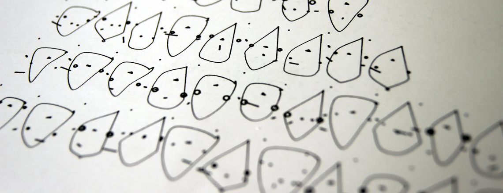
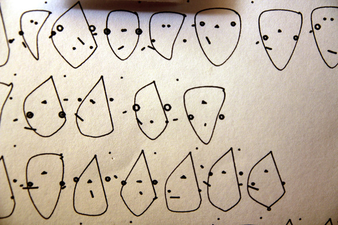
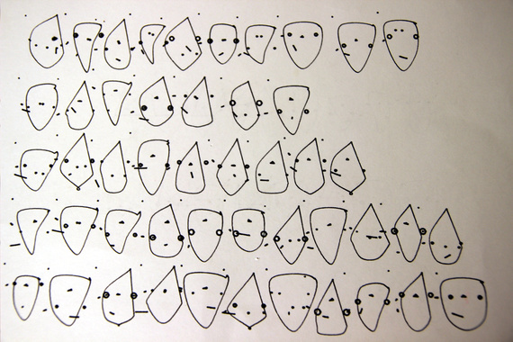

Tatyana Deslandes Mustakos
digital computational |
physical sculptural |
expiramental |
polymer clay |
photography |
drawings |
about |
contact
Generative Faces

Coded using Java, this project was generates random drawings of non-human faces in a similair style. They where then drawn out using a plotter. The video below demostrates the order in which the parts of the faces where coded

